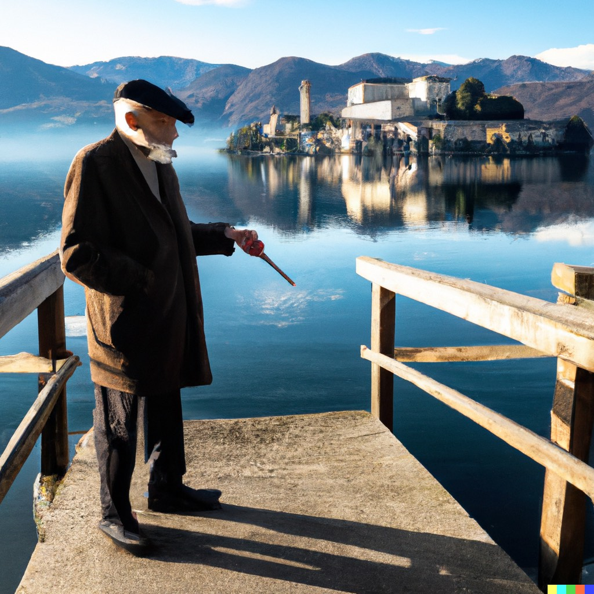
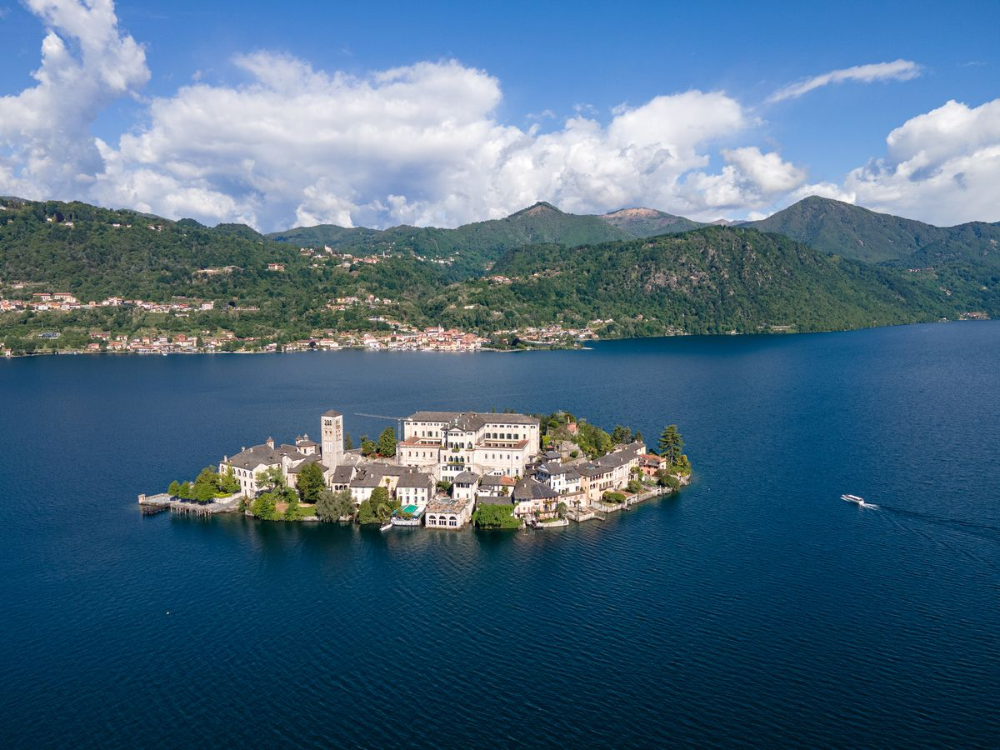

Once upon a time, on the Island of San Giulio in the middle of Lake Orta, there lived a very old and very sick man named Baron Lamberto. At 93 years old, he suffered from 24 different illnesses. One day, while on a trip to Egypt, the Baron met a mysterious Arab who shared a secret with him: "The man whose name is spoken aloud shall remain alive."

Upon returning to San Giulio, the Baron surrounded himself with people who would pronounce his name day and night. To his surprise, he not only remained alive but started to rejuvenate. His nephew, Ottavio, saw an opportunity to inherit the Baron's wealth and decided to take matters into his own hands to put an end to his uncle's days.
As if this wasn't enough, a group of bandits also had their eyes on the Baron and wanted to kidnap him. The Baron's life became a series of dramatic and comical events. With the help of the artists from a traveling circus, the bandits were caught, and Ottavio ran away in defeat.

Despite the absurdity of the tale, it is a reminder of the beauty and mystery of Lake Orta and the Island of San Giulio. The island has a rich history and is known for its breathtaking views, historic buildings, and beautiful gardens. Villa Volpe, located on the shores of Lake Orta, is the perfect place to stay while exploring the island and the surrounding area.
With its beautiful rooms, stunning views, and proximity to San Giulio, Villa Volpe offers an unforgettable experience. Imagine waking up to the sound of the water lapping against the shore, savoring a delicious breakfast, and then setting off to explore the charming island. You may even be lucky enough to catch a glimpse of Baron Lamberto himself!

So, if you're looking for an adventure, come to Lake Orta and stay at Villa Volpe. Who knows what secrets and surprises await you on the Island of San Giulio?